One scene from the game, the glass knight under the dune, held still as a description and a score. Four SCION swarms each build it from the bottom up. Does the scene survive, and is each world its own?
In the MESA CHIP game (make-photo/mesa), Uncle Mesa goes down into a glass cathedral under the dune, and a knight of stained glass steps out of the canyon wall. PAE-09 does what PAE-02 did with the dog at the threshold. The description and the score are held still. The score is the game's own knight machine run once: ten events in 24 s. Four new SCION swarms each build the scene themselves.
Uncle Mesa is a Black man in his sixties with a long white beard and gold-lensed round glasses. He wears a cream wide-brimmed hat, a white guayabera-style shirt, khaki trousers and dark boots, and carries a six-shooter of paint. The knight is made of silver, gold and red glass, with a red glass sword.
If the description is operative, the scene survives every operation, and that can be measured from the pixels. Whether it reads as the scene is for a critic to say.
Four lineages named in the brief for the game's knight, as far apart as possible in what they build with.
| Swarm | The scene is | Invariants | Critic |
|---|---|---|---|
| M1 Afewerk Tekle | a light passing through one fixed window of about 4,970 pieces of glass | all four hold | PASS (narrow) (round 4) |
| M2 Lucasfilm Computer Division, 1985 | 160 convex shards on a hand-keyed skeleton, with a specular pass, motion blur and a rack focus | all four hold | REFERENCE STRONGER (round 1) |
| M3 Djibril Diop Mambéty | torn paper cut from the game's own footage, stiff cards, a griot's cutting | all four hold | PASS (narrow) (round 2) |
| M4 Mœbius and Otomo | one constant black line, flat colour, cast shadow, light trails and a bloom before each break | all four hold | PASS (narrow) (round 3) |
The invariants are the description: every event within ¼ s; the knight out of the glass and from nowhere else; every piece on the floor to the end, in the colour of the shot that freed it; the distance between them moving with the score.
One window, cut once; only the light moves.
build/render.py, cutting());build/figures.py):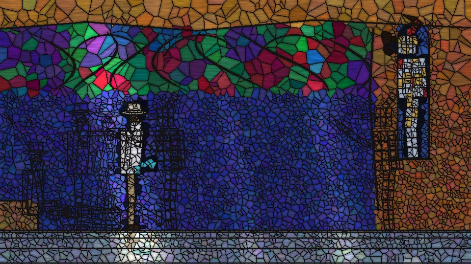
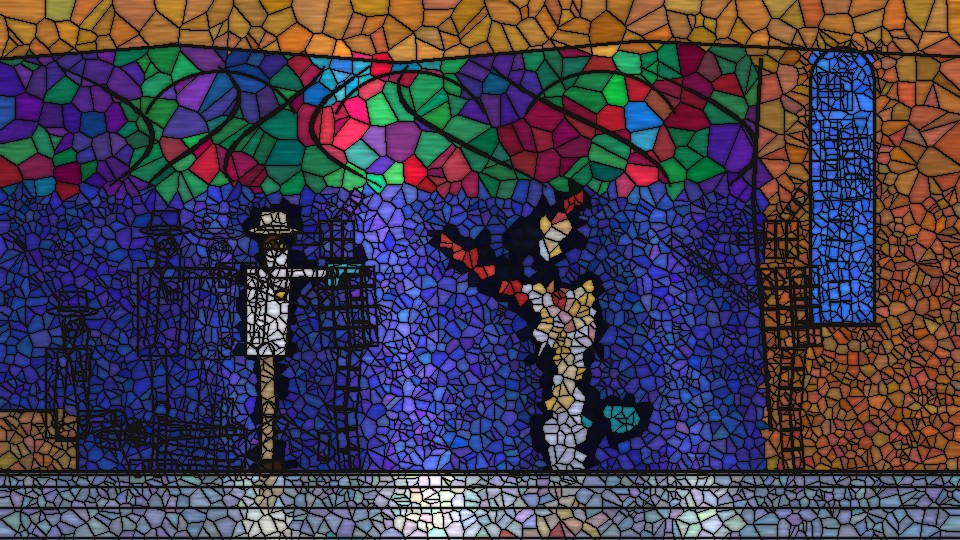
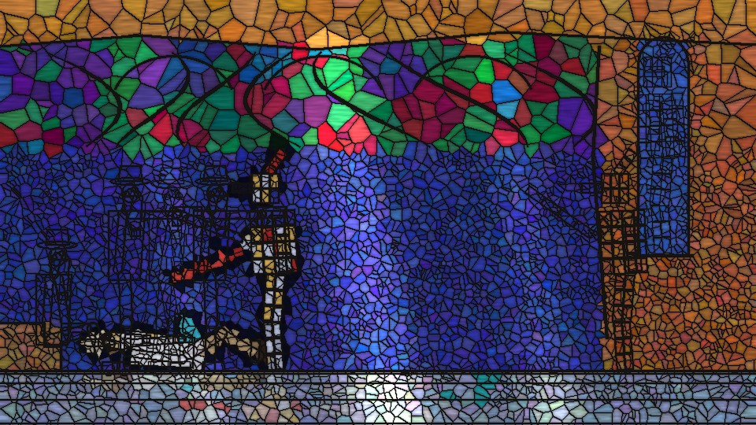
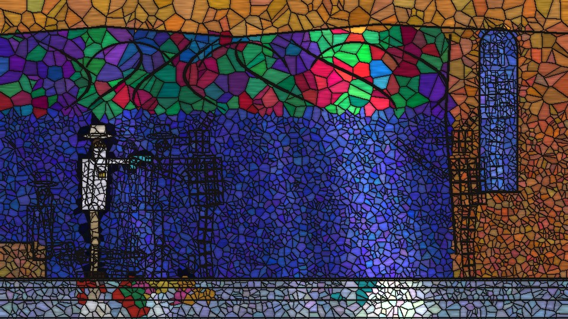
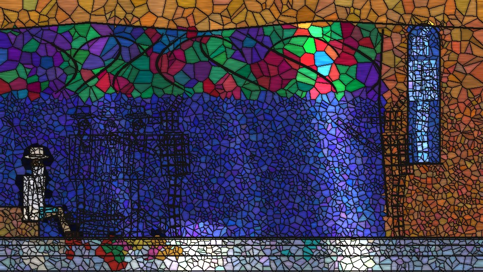
Measured from this swarm's own pixels and label mask by tools/common.py. For each event, the score's time, then the time it appears on screen.
Known limits. At this piece size Uncle Mesa's face and glasses are only a few pieces of glass. His beard and hat read, but his face does not. The icon manner (large eyes, frontal faces) is not achieved: grisaille painting would be fired onto fixed glass and could not move.
Each round is a fresh agent. It sees the film, the brief and this swarm's SCION prompt, never the builder's notes or code.
# SCION M1 · critic round 1 · REFERENCE STRONGER Independent critic (fresh agent; 96 contact-sheet frames at 4 fps, 31 full-resolution stills, 20 extra event frames, 2–4× zoom crops of the window knight and Uncle Mesa, a per-frame difference trace, an RMS envelope and a spectrogram; verdict from the picture, no builder notes). **1 · The ekphrasis on screen.** Every beat happens at its scored time. - **Head turn (3.0).** The dark visor cell in the window knight moves from centre-front to the left edge, toward Mesa, between 2.9 and 3.3. It reads only in a 3× crop, and is invisible at full frame or phone size. - **Steps out (4.5).** At 4.4 the knight is in the window. By 4.7–5.0 the window is empty blue and the knight stands whole on the stone pier. It reads. - **Red sword (6.0).** Clearly drawn at 6.1–6.3. - **Gun (6.5).** The cyan gun rises from waist to arm's length between 6.5 and 6.8. - **Hit 1 (9.5–9.7).** Cyan pieces appear, but on the knight's mid-torso and right flank rather than clearly on the shoulder. By 10.5 cyan pieces lie on the floor and they stay to the end. - **Mesa goes down (12.2).** He stands at 12.1 with the sword raised and lies flat at 12.3: a two-frame pop, with no fall. - **Gets up (14.0).** The same two-frame pop. - **Hits 2–5 (15–18).** Amber, pink, yellow and green pieces strip off one by one while the knight advances and Mesa backs off. This is the best-read passage in the film. - **Shatter (19.5–19.8).** What remains of the knight turns red, and the cells scatter and then lie on the floor beside the earlier colours. Every shard keeps its colour, but the floor never reads as a mirror. - **Sits (22.0).** He has lowered the gun by 21.0. The sit is again a pop. - **The light.** It drifts left to right over the whole film, but in the coda (22.3–24.0) it is away from the red pile, so "the light moves on across the pieces" is not shown. - **Sound.** It marks every event with a purposeful, bell-like design: a distinct pitched strike for each hit, a burst at 12.2, a sustained cluster at the shatter and a low tone under the sit. No choir is audible. **2 · Native language, theorem, proof scene.** The theorem is proven literally. Zoomed crops at 9.7 and 23.9 show the same Voronoi cutting cell for cell. The figures exist only as which fixed cells take which colour, and the falling pieces are cells re-lit downward. That is a real and honest solution to section 4, and colour is the event at every hit. But the native language of section 2 is mostly absent: - **The cutting** is a uniform, generic Voronoi tessellation, not a map cut around the figures. Section 6 says "re-cut around it", yet no lead outlines Mesa or the knight. - **The lead** is a thin, uniform black net. The calligraphic sweeps appear only in the upper canopy, so the lead does not draw the figures. - **Icon manner and triptych.** There are no icon-manner figures, no shamma or tibeb, and no triptych. - **Overall**, the look is "stained-glass filter over sprite animation" rather than a window designed as a window. **3 · The bar.** At phone size the head turn and the first hit's location are lost. The lead does not hold the composition when the light is low: in the dim passages the figures are held only by cell tone. Nothing moves that glass could not. The figures do not keep their dignity: all three body-state changes are instant pops (12.1→12.3, 13.9→14.1, 21.8→22.1). The empty blue field right of centre is dead after 12 s, and the pier and window are abandoned after 5 s. **4 · Uncle Mesa as briefed.** - **Visible:** a cream wide-brimmed hat, a white shirt, a yellow badge cell (clear at 10.5), khaki trousers, dark boots, a cyan six-shooter, and dark-brown face cells. - **Not visible:** a long white beard (it merges with the shirt), gold-lensed round glasses, any facial feature, and his age. He reads as "a man in a cream hat and white shirt", not as a Black man in his sixties with a white beard and gold glasses. Repair conditions (ranked, each falsifiable, each with a time range and what must be visible): 1. **The lead draws the figures (0–24 s).** Heavy calligraphic lead, at least 2× the background lead weight, outlines Mesa's hat, face, beard, shirt and legs, and the knight's helm, plume, pauldrons and sword. Both figures must be identifiable from lead alone in any still from 9–19 s darkened to 30 %. 2. **Mesa's face in the icon manner.** A frontal or three-quarter face cut with large eyes, two gold-lens cells, and a long white beard cut from cells distinct from the shirt and separated from it by lead. All of it must be visible at 960×540 without zoom. 3. **No body-state pops (12.0–12.6, 13.6–14.3, 21.5–22.3).** Each move takes at least 6 frames of intermediate poses, and no single frame changes more than about 1 % of the frame's pixels. 4. **The light crosses the pieces in the coda (22.0–24.0).** The floor pool travels across the pile, with at least a 15 % mean brightness change inside the pile region. 5. **A mirror floor (19.5–24.0).** The floor shows inverted colour of the knight, the shards and Mesa. 6. **The head turn and the shoulder hit at phone scale.** At least 3 cells change to a darker visor shape that points at Mesa, and the cyan first hit lands in the upper fifth of the knight. 7. **Use the dead field and the window (5–24 s)**, for example the knight's empty outline glowing in the window as an "after" panel. Keep: the core rule (one fixed cutting, and figures exist only as re-lit cells); every event on time; the per-shot paint colours lying permanently on the floor, especially the strip-off from 15 to 18 s; the light's drift; the pier and arched window; the bell-partial sound design.
# SCION M1 · critic round 2 · REFERENCE STRONGER Fresh independent critic (a 96-frame contact sheet, 21 full-resolution event stills, about 70 crops, a per-frame change trace, a floor-brightness profile, a darkened grey-scale test, and the sound through a spectrogram, astats and an RMS envelope; judged the picture before reading round 1). A near miss: much better than round 1, but not yet clearing its own bar. **1 · The ekphrasis.** Every scored beat happens at its time. - **Opening.** The dune, the columns and the pale glass floor read. The descent reads weakly: he walks off a single block. - **Head turn (3.0–3.3).** The visor wedge swings left past the window frame, toward Mesa. Visible, but tiny. - **Steps out (4.5).** It happens, but the knight on the pier at 4.6–4.8 is a ragged pale column of wall cells, not the crisp knight from the window, so "whole" does not read. - **Sword and gun.** They read; the gun is raised by lighting a different arm. - **Hit 1.** It takes the upper chest and shoulder, and its cyan pieces lie to the end. - **The fall (12.25–12.5).** About 6 intermediate frames: brisk, but now a fall. - **The rise.** A crouch, then upright. - **Hits 2–5.** Still the best passage. - **Shatter.** Every shard keeps its colour, but the floor is never a mirror. - **The sit.** An eight-frame lowering. - **The coda light.** It crosses the pile (21.0–22.5) with a more than 50 % brightness change: met. - **Sound.** A synchronised bell-partial strike for every event, purposeful but schematic. **2 · Native language.** The theorem is proven honestly, and the ghost lead of every held pose, visible throughout, is a real Tekle-like idea: then, now and after in one cutting. But there are two drawing systems for the same figures. The hero poses have their own lead and read as designed glass. Every pose in between (Mesa at 0–1.5 and 15–21.9, the knight from 4.6 to 19.5) is a speckled blob of background cells with no outline of its own. The calligraphic lead lives only in the canopy, and there is no icon manner and no triptych. **3 · The bar.** - **Nothing moves that glass could not:** pass. - **Colour is the event:** pass. - **The lead holds the composition in low light:** fail; the darkened test at 15.0 leaves the knight as speckle. - **Dignity:** partly. - **Phone size:** partly. - **Craft failures:** - the right 55 % of the frame is dead from 12 s; - the window is abandoned after 5 s; - the figures crowd the left third and overlap at 18–19.5. **4 · Uncle Mesa.** In the hero poses at 960×540 he shows a cream hat, dark-brown face cells, a white chin and beard block, a white shirt, the yellow badge, khaki trousers, dark boots and the gun. Only at 6× zoom: a gold lens cell, and a beard separated from the shirt by lead. Not visible: a pair of lenses, eyes, the beard's length, the pleats, or his age. Round 1 repairs: 1. **The lead draws the figures:** partly met (the hero poses only). 2. **The face in the icon manner:** partly met. 3. **No pops:** met. 4. **The coda light:** met. 5. **The mirror floor:** not met. It does not contradict the theorem, because fixed floor cells could be lit as a reflection. 6. **The head turn and the shoulder hit:** partly met. 7. **Use the window and the field:** not met. Repair conditions (ranked): 1. **One drawing system per figure (4.6–19.5 knight; 0–2 and 14.5–22 Mesa).** Every lit pose has its own lead contour at least 2× the background weight, and the knight keeps its helm, plume, pauldrons and silver/gold/red division. Both are identifiable from lead alone when darkened to 30 %. 2. **The knight steps out whole (4.5–6.0):** the same design as the window knight. 3. **A mirror floor (12–24 s):** floor cells take the inverted colour of what stands above them. 4. **Use the window and the field after 12 s.** 5. **Mesa's face:** two gold lenses and a long beard, legible without zoom, in every pose. 6. **The head turn:** at least 3 visor cells, visible at 480×270. Keep: the one fixed cutting with the ghost lead; the gun raised by lighting a different arm; the paints accumulating; the de-popped moves; the coda light; one bell strike per event.
# SCION M1 · critic round 3 · REFERENCE STRONGER Fresh independent critic (a 96-frame contact sheet, 25 full-resolution stills, 8 fps strips of the fall and the shatter, crops of the window, the floor and Mesa's head, a frame darkened to 30 %, an RMS envelope and the spectral peaks; judged the picture before reading round 2). A near miss. The theorem holds and every beat is on time, but three things are still not drawn in the glass: the knight does not step out whole, Uncle Mesa stops being Mesa during the duel, and the frame is lopsided. **1 · The beats.** - **Opening.** The dune, the canopy, the columns and the pale floor read. The descent reads weakly. - **Head turn (3.0–3.6).** Visible at 960×540, but a flicker at phone size. - **Steps out (4.5–4.8).** The window goes dark with only the knight's ghost lead in it, and a figure lights on the pier: the theorem at its best. But the figure outside is a coarse cream wedge of wall cells, not the silver, gold and red design, so "whole" does not read. - **Sword (6.5) and gun (6.75).** They read. - **The approach (7.25–9.5).** It reads over a near-silent drone: good tension. - **Hit 1.** The shoulder turns cyan, and its pieces lie to the end. - **The fall (12.2–12.5).** About six frames: brisk, but a fall. - **The rise (13.8–14.1).** It reads. - **Hits 2–5 (15–18).** The best passage: the knight keeps advancing while it comes apart. - **Shatter (19.5–20.5).** It reads, and every colour stays. - **The mirror floor.** Now present, but only findable in a crop. - **The sit.** It reads. - **The coda.** The empty window glows pale cyan, a real "after", and the light moves on across the pile. - **Sound.** One bell partial per event: purposeful and synchronised, but schematic, and the gun raise has no sound. **2 · Native language.** No cell moves, and the figures are drawn by which cells are lit. The ghost lead of every pose is a real "then, now and after" inside one cutting. Still failing: two drawing systems per figure. The hero poses have a fine cut; the in-between poses are coarse background cells, though the new dark halo helps. The calligraphic lead lives only in the canopy, and there is no icon manner. **3 · The bar.** - **Nothing moves that glass could not:** pass. - **Colour is the event:** pass. - **The lead holds in low light:** partly. - **Dignity:** partly; he becomes a white lump in the duel. - **Phone size:** partly. - **Craft failures:** - the right 55 % of the frame is empty from 12 to 21.8 s; - the sword, the gun and the two bodies knot together at 15–19.8; - Mesa's cut changes scale between poses. **4 · Uncle Mesa.** - **In the standing poses:** a cream hat, dark-brown face cells, a white beard block, a white shirt, the yellow badge, khaki trousers, dark boots and the gun. - **At 4× zoom:** gold flecks for the glasses. - **Never:** two round lenses, eyes, the beard's length, pleats, or his age. - **In the coarse poses (15–21.8):** the hat brim, face and beard dissolve. Round 2 repairs: 1. **One drawing system:** partly met. 2. **Steps out whole:** not met. 3. **The mirror:** partly met. 4. **The window and the field:** partly met (the coda glow is new and good). 5. **Mesa's face:** not met. 6. **The head turn:** partly met. Repair conditions (ranked): 1. **The knight on the pier** (4.5–6.5) has its own cut with the window knight's division, plume and helm, matchable part for part at 480×270. 2. **Mesa keeps his identity in every pose:** brim, face, two lenses and a long beard, at 960×540 from 15 to 19.8 s. 3. **Separate the duel:** at least 2 unlit cells between the gun arm and the sword at every hit. 4. **Use the right of the frame after 12 s:** a light event there tied to the score events. 5. **The mirror reads at 480×270:** an inverted silhouette at at least 40 % brightness. 6. **The head turn** stays inside the window and reads at phone size. Keep: the fixed cutting and its ghost lead; the window emptying; the gun raised by lighting another arm; the paints accumulating while the knight walks; the red shatter running down the wall; the reflections; the window's glow and the light moving on; the drone and the bell partials.
# SCION M1 · critic round 4 · PASS (narrow) Fresh independent critic (a 96-cell contact sheet, 23 full-resolution stills, crop strips of the head turn, the step out, the draw, the gun arm, the stair, Mesa's face at 6×, the floor, and a 480×270 phone-size frame; an RMS onset scan of the sound; judged the picture before reading round 3). The theorem is proved cleanly. No cell moves at any point: the knight leaves its window, fights, is painted and breaks purely by which cells are lit. Every beat of the ekphrasis is on screen within tolerance. What keeps this narrow is legibility: at phone size the duel is a knot, Uncle Mesa loses his identity in the walking poses, and the mirror floor still has to be searched for. **1 · The beats.** - **Opening.** It reads; the descent does not. - **Head turn.** It reads as "something changed". - **Steps out (4.5–5.8).** The knight stands on the pier with its plume and its silver, gold and red division, so "whole" reads, and the window glows empty with only its ghost lead: the theorem at its best. - **Sword and gun.** They read. - **Hit 1.** The shoulder lights cyan and the window flashes cyan. - **The fall and the rise.** They read. - **Hits 2–5.** The strongest passage: the knight keeps advancing and is repainted with each shot. - **Shatter.** It breaks into separate red islands ringed in dark lead. - **The sit.** It reads. - **The coda.** The window glows, the floor highlight slides right, and the pile holds every colour. - **Sound.** Tightly locked to the score, with near-silence in the two held breaths. Bell-like and schematic. **2 · Native language.** The proof scene is met to the letter. One fixed cutting holds every pose as ghost lead, and light picks one pose at a time, so then, now and after coexist in the glass: a genuine triptych logic. Pieces "fall" by going dark on the body while their colour lights on the floor. Still missing: one drawing system for the walking poses, calligraphic lead outside the canopy, and the icon manner. **3 · The bar.** - **Nothing moves that glass could not:** pass. - **Colour is the event:** pass. - **Lead in low light:** mostly. - **Dignity:** partly. - **Phone size:** fails in the duel. - **Craft failures:** - the gun touches the knight at 18 and 19.5 s; - the right of the frame is dead apart from the light; - Mesa's cut changes scale; - the mirror is a texture, not a reflection. **4 · Uncle Mesa.** - **In the standing poses:** the cream hat, the white shirt, the yellow badge, khaki trousers, dark boots and the gun. - **At 6× only:** dark-brown face cells, a white beard block and a gold fleck. - **Never:** two round lenses, eyes, the beard's length, pleats, or his age. - **In the walking poses:** the hat is lost. Round 3 repairs: 1. **The pier knight's own cut:** met. 2. **Mesa's identity in the duel:** partly met. 3. **Separate the duel:** not met. 4. **The right of the frame:** partly met; the flash colours do not always follow the paints. 5. **The mirror:** not met. 6. **The head turn:** partly met. Repair conditions (ranked): 1. **Separate the duel at each hit frame** with at least 2 unlit cells; re-cut the knight narrower if the score's distance forbids a gap. 2. **The walking cuts** carry the brim and the face. 3. **Two gold lens cells and a beard to mid-chest,** legible at 960×540. 4. **The descent** over at least 3 lit treads. 5. **The mirror** at 40 % brightness at 480×270. 6. **The window flash** takes each shot's hue. 7. **The head turn** with no cells lit outside the window before 4.5 s. Keep: the fixed cutting and its ghost lead; the window emptying to a blue ghost; the gun raised by lighting a second arm; the paints accumulating while it walks; the red shatter into lead-ringed islands; the pile; the coda light; the silent breaths; the event-locked bells.
Every pose keyed by hand; every shard catches its own light.
build/dopesheet.py; each key's reason is in dopesheet.json.build/dopesheet.py (the keys) and build/render.py (FK, the shard skin, the passes, the plate, the sound);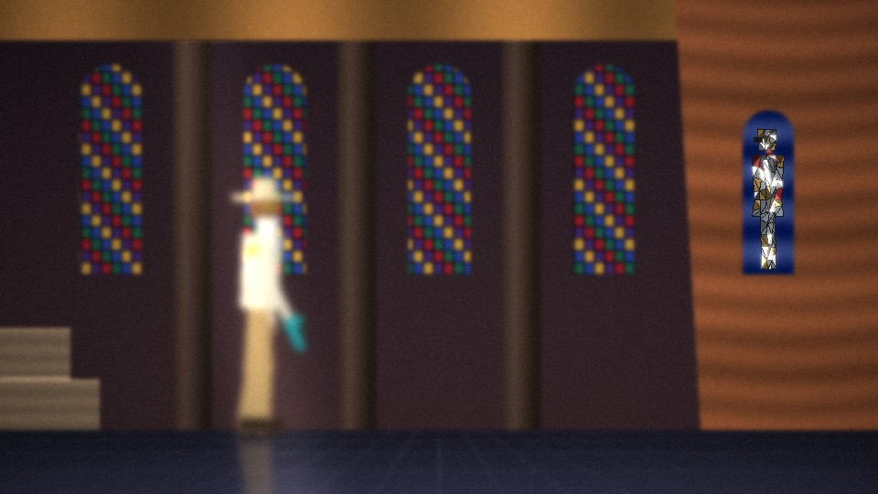
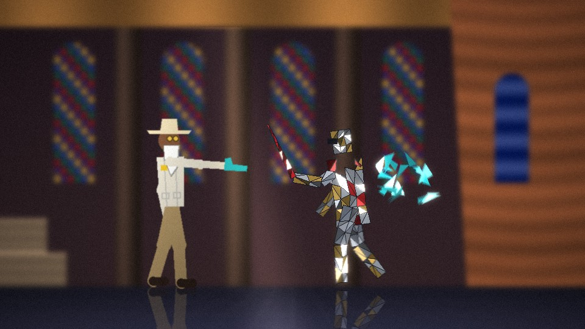
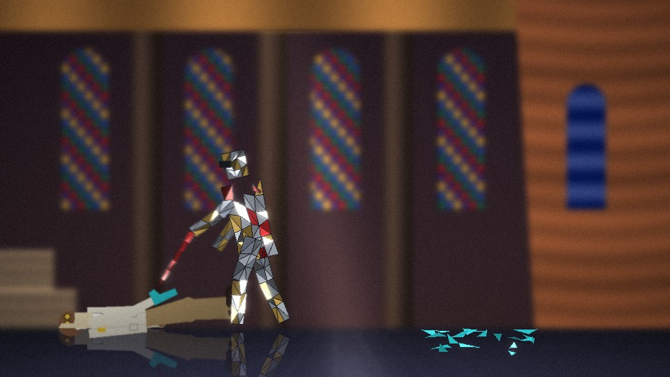
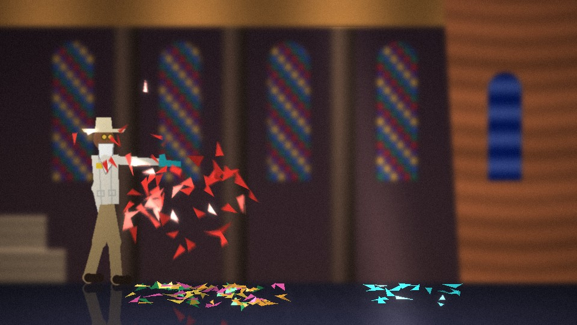
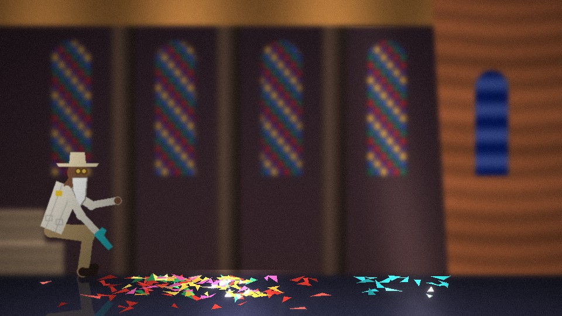
Measured from this swarm's own pixels and label mask by tools/common.py. For each event, the score's time, then the time it appears on screen.
Known limits. The plate is a painted backdrop, not live action, and Uncle Mesa is a painted figure standing in for the plate actor. The feet can slide a little during the advance, because the keyed cycle is not locked to the score's speed.
Each round is a fresh agent. It sees the film, the brief and this swarm's SCION prompt, never the builder's notes or code.
# SCION M2 · critic round 1 · REFERENCE STRONGER Independent critic (fresh agent; about 250 frames: four 4 fps contact sheets, 26 full-resolution stills at and after every event, and 24 fps and 12 fps crop strips of the step-out, the walk, hit 1, the strike, the get-up and the coda; audio checked with astats, silencedetect, showspectrumpic and an RMS envelope; verdict from the picture, no builder notes). **1 · The beats on screen.** Most land on time; four do not read. - **Descent (0–2.5 s).** It reads. - **Head turn (3.0 s).** It does not read: the rack focus to the window runs 2.25–3.3 s, so the knight is a soft smear during the turn. - **Step out (4.55–5.0 s).** On time, in one continuous move, whole. But it is a superhero leap, not a step. - **Draw (6.0–6.2 s) and gun (6.5–6.75 s).** Both read. - **Hit 1 (9.5–10.3 s).** Clean, and the best single moment: a cyan burst off the right shoulder, with cyan shards tumbling, landing and lying to the end. - **The strike (12.0–12.4 s).** It reads strongly: he topples back with directional blur. - **The get-up (13.9–14.0 s).** A pop. There is also a hat continuity error: the hat lies on the floor, then is suddenly back on his head at 13.93 s. - **Hits 2–6.** All on time, and they stay on the floor. Amber and yellow are hard to tell apart. - **"Keeps walking."** Weak: the knight steps in place at point-blank range. - **Shatter (19.5–20.5 s).** It reads. - **Lowers the gun and sits.** Muddled: he sits at about 22.5 s, then the gun comes back up while he is seated. - **The light moving on.** Present but faint, and it barely touches the main pile. **2 · Native language and proof.** The knight is the real achievement: - **Per-shard glints.** Slightly convex triangular shards, each with its own specular glint (6.2, 9.7, 15.0 s). It reads as glass and looks like it could break. - **Motion blur where things move.** The leap, the fall and the get-up, though at 4.88 s it shows as two ghost copies rather than a streak. - **The rack focus.** A genuine computed event, but placed so that it swallows the head turn. The hand-keyed performance falls short. The walk barely advances and shows little weight shift, so the chain from attention to intention to gesture is thin. The plate is generic, with nothing that establishes "under the dune" or columns of light. The navy floor does give real mirror reflections. The sound marks every event (footsteps, a chime at 3.0, an impact at the step-out, the draw's ring, the knight's footfalls, the glass shots, the strike block and its silent hold, the shatter's tinkle, and true silence from 23 s). The gun raise has no distinct sound. **3 · The bar.** - **Met:** the highlights are per shard, and the knight looks breakable. - **Partly met:** the blur, which ghosts, and the focus, which comes at the wrong moment. - **Not met:** weight shifting before the steps. - **Craft failures:** - the hat teleport; - the pop get-up; - the gun re-raised while seated; - the two figures crowded on top of each other at 15–19.5 s; - amber and yellow indistinguishable; - the left step low in contrast. **4 · Uncle Mesa.** - **Can see:** brown skin, so he reads as a Black man; a cream wide-brimmed hat; a white shirt with a yellow badge square; khaki trousers; dark boots; and the gun. - **Cannot see:** a long white beard (it merges into the shirt like a bib), two round gold lenses (there is one disc, which reads as a monocle), any guayabera detail, and his age. He is cruder than the knight. Repair conditions (ranked): 1. **The head turn is legible (3.0–3.6 s).** The knight is sharp before 2.9 s, and its visor rotates visibly toward Mesa. 2. **The get-up and the hat (13.5–14.3 s).** No hat in two places. The get-up takes at least 0.6 s, with a push off a hand or knee. 3. **The walk with weight (7.0–9.5 s and 15.0–19.5 s).** The hips move over the planted foot, with a vertical bob and visible ground covered. 4. **Lowers the gun and sits (21–24 s).** The gun stays at or below the hip once lowered, and the step is distinguishable under him. 5. **The light moves on (20–24 s)** across the main multicoloured pile. 6. **Uncle Mesa.** A beard distinct from the shirt that reaches the chest, two round gold lenses or a framed round lens, and a guayabera cue. 7. **The step out (4.6–5.0 s).** A foot contacts the sill or floor, or the landing compresses, and the blur is a streak. 8. **The piece colours (15–18 s).** Amber and yellow are told apart from each other and from the gold. Keep: the convex shard knight and its glints; the hit-1 burst and its cyan pile; the strike and the fall with directional blur; the mirror floor; the continuous move out of the window; the sound design, including the silent hold and the final silence; the true paint colours; the rack focus, re-timed.
The clock is kept and the angle broken: told, not shot.
build/footage.py).assets.json.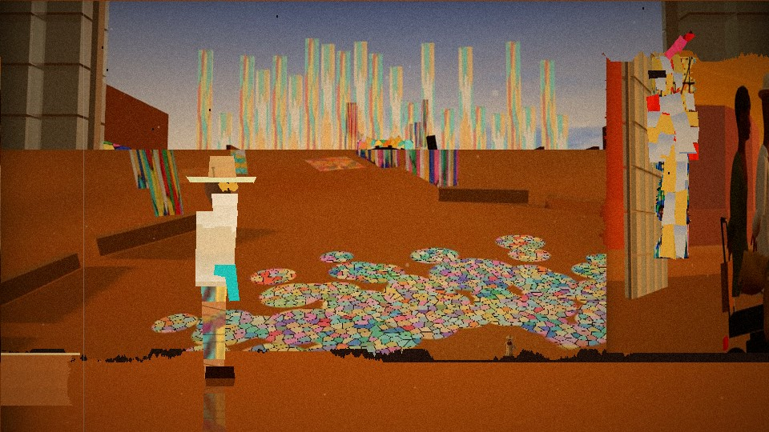
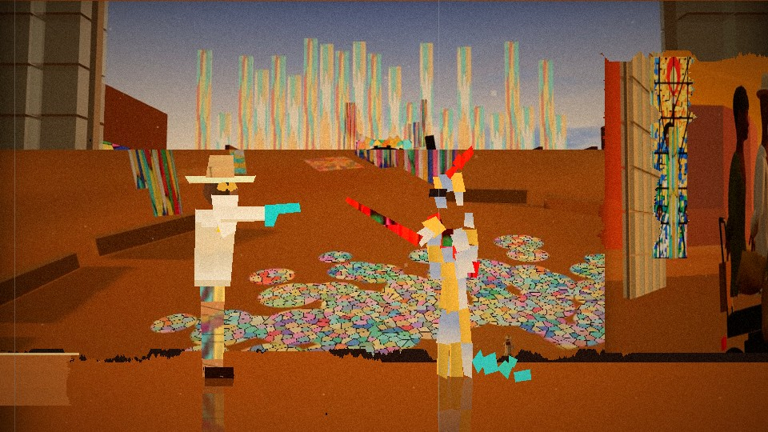
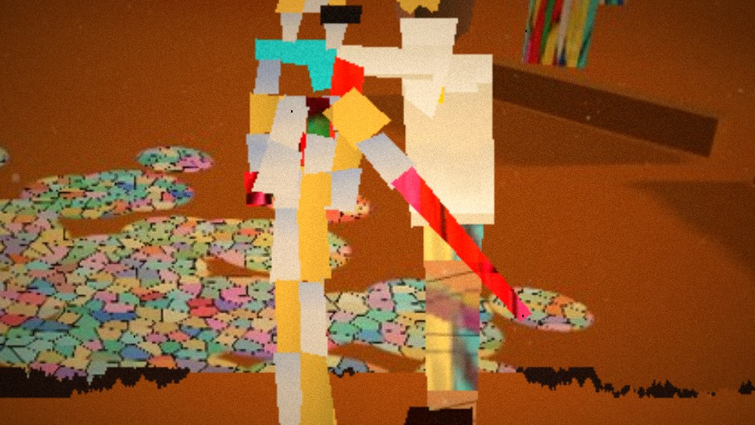
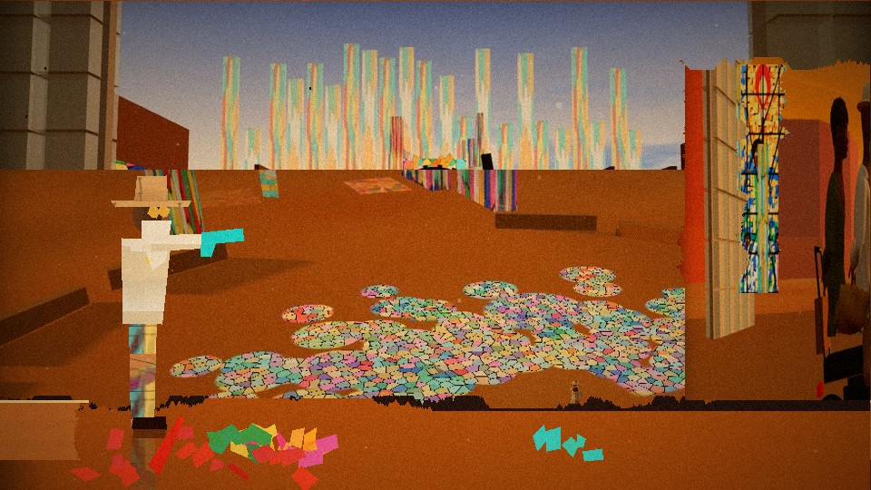
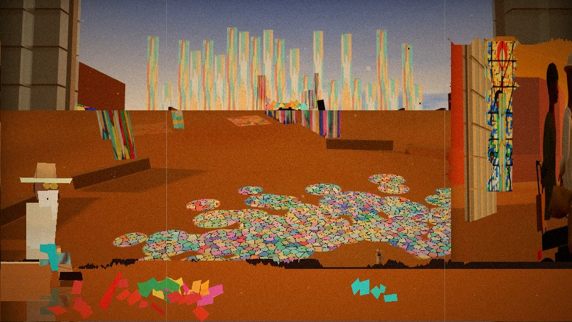
Measured from this swarm's own pixels and label mask by tools/common.py. For each event, the score's time, then the time it appears on screen.
Known limits. The figures are cut from the footage's colour, not from footage of people. The game's frames show Uncle Mesa mostly from behind, so the hunter took his materials (shirt, hat, skin, khaki) and the swarm drew the cards. The invariants are measured only on master frames. The re-tellings and inserts are left out of the measurement and listed with their times in trace.json.
Each round is a fresh agent. It sees the film, the brief and this swarm's SCION prompt, never the builder's notes or code.
# SCION M3 · critic round 1 · REFERENCE STRONGER Independent critic (fresh agent; 144 contact-sheet frames at 6 fps, about 45 full-resolution stills and crops at and after every score event, a scene-cut list, a spectrogram, silencedetect and transient timing; verdict from the picture, no builder notes). **1 · The ekphrasis on screen.** Most beats read, three do not, and the coda is missing. - **Head turn (3.0).** It barely reads: the visor bar shifts a few pixels. - **Steps out whole (4.7).** It works: a jump cut leaves the leaded window visible and empty. - **Sword (6.2) and gun (6.5–6.8).** Both read clearly. - **Shoulder hit (9.5).** Strong: the shoulder goes cyan, and cyan shards lie on the floor from 10.2 to the end. - **The fall (12.2–13.0).** Strong. - **Gets up (14.0–14.3).** It reads. - **Hits 2–5.** Each colour falls at its second, but amber (15) and yellow (17) are hard to tell from the knight's own gold. From 12 s on the knight stands at blade's length, so "keeps walking" reads as standing and flaking. - **Shatter (19.5–20.4).** It reads, and all six colours lie in distinct clumps. But the floor in the action plate is orange sand, not a mirror. - **Lowers the gun (20.9).** It reads. - **Sits on the lowest step (22.1).** It does not read: no step is drawn, and his legs drop out of frame. - **The light moves on across the pieces.** Absent. The last shot is the empty blue-tile floor, with no pieces. The story survives the cutting through the fall, thins in the hits, and is lost in the coda. **2 · Native language and the theorem.** The world is its own and built bottom-up: stiff card puppets, plates collaged from the game's stills, a torn seam along the floor line, hot and worn orange with grain and scratches, jump cuts inside gestures, and found inserts. The first half of the hard proof is met twice: - **The hit** is told as wide (9.5), medium (9.62) and mirrored close (9.75), then back to wide (9.92). - **The knockdown** is told as wide (12.2), medium (12.375) and mirrored close (12.5), then back to the wide (12.67). Neither loses the story. The second half is not met: no insert changes what the next shot means. - **The "10" insert** (the horned rider from behind) returns at 7.0, 14.5 and 21.25. It lands at decisions, but it is identical each time and leaves no meaning behind. - **The colour smear (10.4)** is decoration. - **The tile "sea"** bookends the film but is never tied to the pieces. The re-tellings are crops and mirrorings rather than new angles: thin, but legal. **3 · The bar.** - **Sound agrees at the important moments.** Each shot report fires 3 frames before the paint lands, the fall's noise sits exactly on 12.2–12.9, a low tone sits under each "10" insert, and a plucked pulse ticks throughout. Disagreement on purpose is limited to those 3-frame leads. - **The ending.** There is silence from 22.92, but it falls on an image with no pieces and no light moving. - **Craft failures:** - the head turn is illegible; - the knight is pinned against Mesa with the sword resting on his chest (14.3–19.4); - amber and yellow are camouflaged in the gold; - his legs are cropped on the sit; - there is no mirror floor in the action. **4 · Uncle Mesa.** - **Can see:** a brown-skinned face block, a white beard (short to mid rather than plainly long), a cream wide-brimmed hat, a cream-white shirt (no guayabera detail), trousers that read brown with teal and green streaks more than khaki, dark boots and a cyan pistol. - **Cannot see:** the gold-lensed round glasses (a single dot), the yellow badge, and his age. - **The knight:** it reads correctly. Repair conditions (ranked): 1. **The coda (23.1–24.0).** The final shot shows the six piece clumps on a reflective floor, with a light band travelling across them. The pieces cover at least 15 % of the frame, the light moves at least 20 % of the frame width, and it plays under the silence. 2. **An insert that changes meaning.** At least one returning insert visibly changes between its returns (for example the number counting the shots, or the image taking on the paint colours), and the shot after its last return reads differently because of it. 3. **The sit (21.9–23.1).** A step edge is drawn. His seat rests on it, knees bent, both boots on the floor inside the frame, held at least 0.4 s. 4. **The head turn (2.8–3.4).** The visor moves toward Mesa by at least a third of the helmet's width, held at least 6 frames. A cut-in to the helmet is allowed. 5. **Keeps walking (14.3–19.4).** At least two visible steps forward between the hits, with the sword not resting on his chest, and amber and yellow placed against silver pieces. 6. **Mesa, in a close shot.** Two gold lens discs and a yellow badge are distinguishable, and the trousers are khaki. Keep: the three-way re-tellings of the hit and the fall; the step-out jump cut; the shards staying on the floor; the collage plate, the card puppets and the found inserts; the shot reports leading the paint; the fall's noise; the tone with each "10"; the ending silence starting before the cut.
# SCION M3 · critic round 2 · PASS (narrow) Fresh independent critic (144 contact-sheet frames at 6 fps; 60 frames at 24 fps across hit 1, the fall and the shatter; 24 full-resolution stills; crops of Mesa's face, the helmet and the coda; a scene-cut list, an RMS envelope, a spectrogram, astats and silencedetect; judged the picture before reading round 1). **1 · The ekphrasis.** Most beats read at their times, and the story survives every cut cluster. What reads: - the step out, a jump cut that leaves the window empty (4.5–4.7); - the sword and the gun (6.17, 6.5); - the advance (7.3–9.5); - hit 1 (cyan pieces lie from 9.92 to 24.0); - the fall (12.2–12.67, strong); - the rise (13.9–14.3); - each colour of hits 2–5 lands at its second; - the shatter (19.5–19.8, all six clumps distinct); - the gun lowered, the cross to the step and the sit (20.8–23.0); - the light moving across the pieces under the silence (23.3–23.95, about 29 % of the frame width). Weak or missing: - the descent down the steps is not told; - the head turn barely moves (about a sixth of the helmet); - "keeps walking" is not told (14.7–19.4, the knight is pinned at contact); - amber is nearly lost at 15; - there is no mirror floor in the action; - the mosaic pools in the plate compete with the freed pieces. **2 · Native language and proof.** The language is the film's own: card puppets, a torn collage plate, a hot worn grade and found inserts. - **The fall is told three times as a genuine re-performance:** wide (12.21), medium where he is upright again and falls again (12.375), tilted reverse close where he falls a third time (12.5), then the wide with him lying (12.67). The story is never lost. Hit 1 and the shatter repeat the pattern. - **The horned rider returns at decisions** (3.58, 7.0, 14.5, 21.25) and accumulates the paint. At 14.5 a single cyan reads as a tally of one, and at 21.25 the fully painted horns turn the walk to the step into a spent beast's rest. That is a real, if modest, insert that changes what the next shot means. **3 · The bar.** Sound is purposeful: - the shot reports lead the paint by 2–3 frames; - a low horn sits under each horns insert and stays past the cut; - a noise burst marks the fall; - the bed drops out after shot 1 and after the last shot; - true silence holds from 23.3 s. Craft failures: - the two figures interpenetrate at 15–19.4; - the inherited mosaic pools muddle the pieces; - there is no mirror in the action; - amber is camouflaged; - the sitter is jammed against the left edge; - the head turn is illegible; - dark silhouettes at the right edge go unexplained. **4 · Uncle Mesa.** - **On the puppet:** a cream hat, a dark-brown face sliver, a white shirt block, dark boots and a cyan six-shooter. The beard is indistinguishable from the shirt, the glasses read as a gold strip, the trousers read as yellow plaid, and the badge and his age are not visible. - **In the found inserts:** he is plainly a dark-skinned man with a white beard, round glasses and a cream hat. Round 1 repairs: 1. **The coda:** partly met. There is no reflective floor, and the pieces cover 5–10 % of the frame. 2. **The insert that changes meaning:** met, modestly. 3. **The sit:** partly met. 4. **The head turn:** not met. 5. **Keeps walking:** not met. 6. **The Mesa close-up:** not met on the puppet. Repair conditions (ranked): 1. **Keeps walking (14.7–19.4).** At least two visible steps, no overlap of the silhouettes except at the strike, and one hit re-told by cutting. 2. **Clear the plate's mosaic pools,** or make them a reflective floor with reflections under the figures. The freed pieces cover at least 15 % of the coda frame. 3. **The head turn:** at least a third of the helmet's width, held, or a cut-in. 4. **The descent** over at least two drawn step edges. 5. **Amber** told apart from the gold at 15.5. 6. **The sit** at least 10 % of the frame width in from the left edge. 7. **The Mesa puppet:** two round gold discs, a long beard separate in tone, a yellow badge and khaki trousers. Keep: the three-fold fall and the other clusters; the accumulating horns insert and its tone; the step-out jump cut; the six clumps; the shot reports and the dropouts; the silence over the travelling light; the puppets, the collage plate, the grade and the found inserts.
Calm drawing, uncalm events: the outline blooms, then breaks.
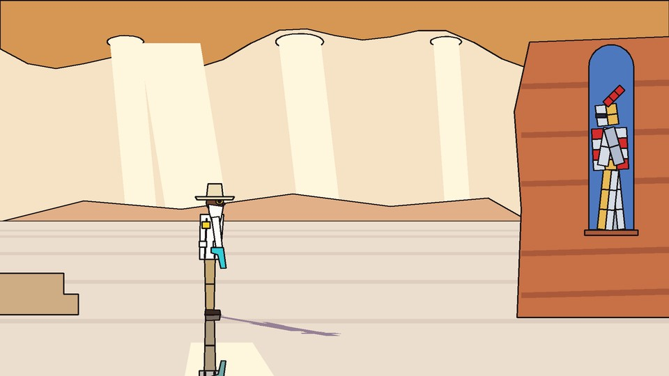
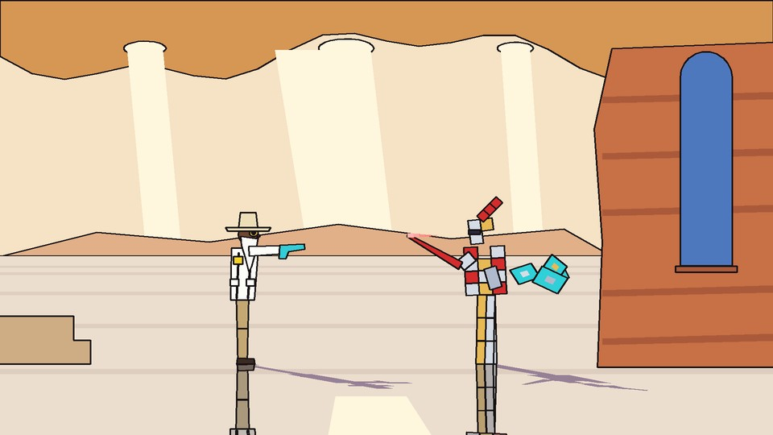
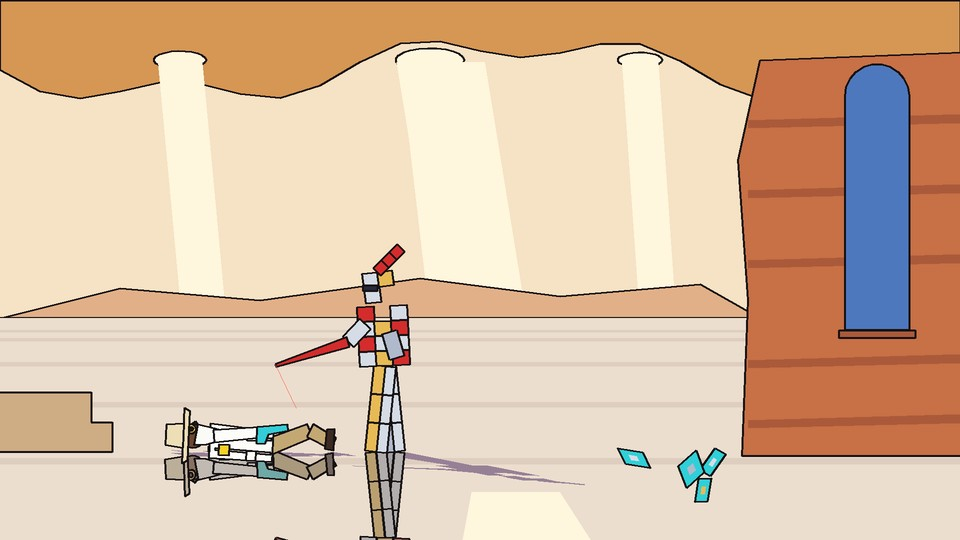
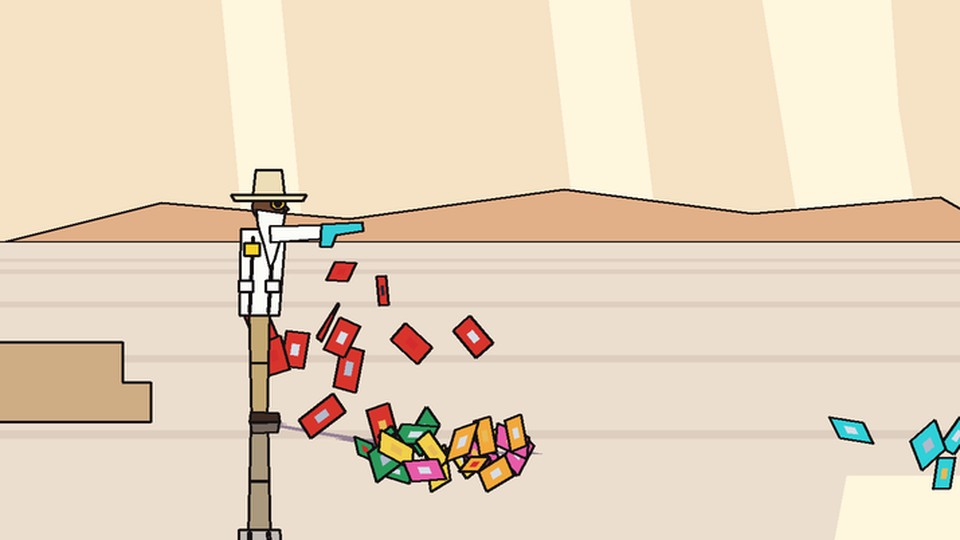
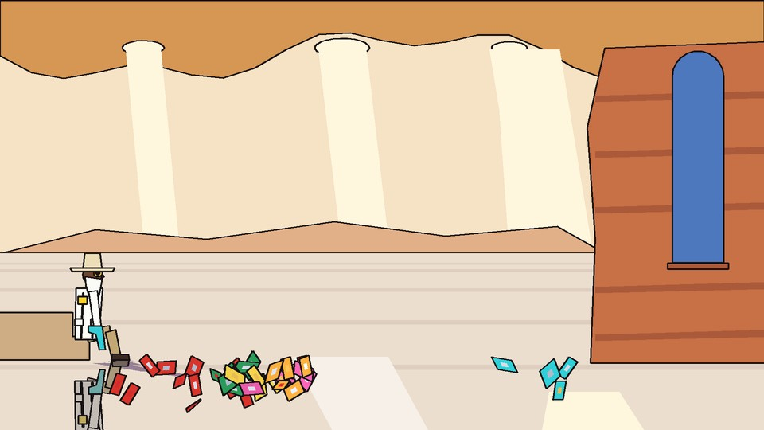
Measured from this swarm's own pixels and label mask by tools/common.py. For each event, the score's time, then the time it appears on screen.
Known limits. The figures are small and simple, close to stick-and-panel construction: Mœbius's hands, folds and faces are not attempted. The knight's panels are a regular grid, not a designed armour.
Each round is a fresh agent. It sees the film, the brief and this swarm's SCION prompt, never the builder's notes or code.
# SCION M4 · critic round 1 · REFERENCE STRONGER Independent critic (fresh agent; about 170 frames: 96 contact-sheet frames at 4 fps, 34 full-resolution stills at and just after every event, and about 40 frame-by-frame crops; verdict from the picture and the audio track only, no builder notes). **1 · The beats on screen.** One locked wide shot, side-on, for the full 24 s. Most beats read at their times. - **Head turn (3.0).** The visor slit moves to the left edge, toward Mesa, but only by about 6 px, so it is nearly invisible. - **Steps out (4.5–5.2).** The knight slides left out of the blue lancet, whole, with a pale trail, and the window stays empty and blue: a strong touch. - **Red sword (6.0–6.3).** It simply appears; there is no draw arc. - **Gun (6.5–6.8).** It reads. - **Hit 1 (9.4–10.2).** A cyan tracer, then a cyan organic bloom on the shoulder (9.6), then pieces fly (9.8) and lie on the floor to 24.0. - **Mesa goes down (12.0–12.4).** A pink sword-arc trail sweeps down, but the blade passes through his torso and he goes down as a rigid plank in about 4 frames. - **Gets up (13.9–14.4).** The same rigid board rotates up. - **Hits 2–5.** Each is a bloom followed by a drop of paint-coloured pieces, and the knight visibly thins. - **"Keeps walking".** Weak. The knight advances only about 70 px in 4 s and stands parked at sword reach without striking. - **Shatter (19.5–20.3).** By 19.5 what remains of the knight is entirely red. It blooms (19.65), flies (19.9) and settles (20.3). Every freed piece keeps its paint, but none of the knight's own silver, gold and red glass survives on the floor. - **Mirror floor.** Not drawn. - **Lowers the gun and sits.** Both read clearly. - **The light in the coda.** It fails: the moving floor light slides along the bottom edge and never touches the main pile. - **Sound.** The events are marked: a drone, a burst at 4.5, a chord at 6.0, footsteps, a blip and a burst at each hit, a peak at 12.2, and the loudest event at 19.5–21.5. But the hit bursts are flat full-band white noise, not glass, and hit 1 is no louder than the footsteps. **2 · Native language and the theorem.** The native language is partly there: uniform contour, flat fills, consistent cast shadow, trails that persist (the exit, the sword arc, the paint tracers), and the bloom before each break. The bloom is the film's best idea and it is carried out at every hit. But "calm drawing, uncalm events" needs drawing, and this is vector clip-art: stacks of rectangles and a two-pose scissor walk. The ground is a shallow stage, not vastness. There is no glass cathedral and no glass or mirror floor, and the knight reads as Mondrian tiles, not stained glass. Mœbius's actual pages, or Akira's bike trails and Tetsuo's body, beat it decisively on these terms. **3 · The bar.** Line weight is constant, and the trails do show direction. Craft failures: - (a) the figures do not read as drawings; - (b) there is no acting in the fall or the rise, and the blade passes through Mesa without contact at 12.2; - (c) the knight is parked at sword reach for 14.0–19.5 without striking; - (d) the breaking is pretty but not frightening: the blooms are small, in the same static wide, with no scale change; - (e) the sword after the shatter is a long red line running out of frame; - (f) the floor light is drawn behind the pieces; - (g) the hit sounds are flat noise blocks. **4 · Uncle Mesa.** - **Can see:** dark brown skin, a white beard (a block, separated from the shirt only by the contour), a gold lens dot, a cream wide-brimmed hat, a white shirt, khaki trousers, dark boots and a cyan six-shooter. - **Cannot see:** his age beyond the beard, round glasses, anything guayabera about the shirt, and the yellow MESA CHIP badge. Repair conditions (ranked): 1. **The coda light (22.0–24.0).** A floor light band passes over the main pile, and the shards under it brighten while keeping their hue, for at least 12 consecutive frames. 2. **A mirror or glass floor (0–24).** A visible inverted reflection of Mesa, the knight and the shards, on screen at 4.7, 9.8, 12.4, 19.9 and 23.5. 3. **The knight's own colours survive (19.5–24.0).** Silver, gold and red knight-glass shards are visible on the floor at 20.3 and 23.5, and the remnant is not uniformly repainted red. 4. **"Keeps walking" (14.0–19.5).** At least three visible alternating strides, closing at least 150 px, and no blade overlapping Mesa unless it is swinging. 5. **The fall and the rise as acting.** Visible contact, then a knee bend or hand plant, at least 6 frames each way, with no rigid plank rotation. 6. **Draughtsmanship.** A drawn profile with a round gold-rimmed lens, a beard silhouette distinct from the shirt, guayabera pleats or pockets and the yellow badge, lead lines between the knight's panes, and a closer framing on the bloom at 19.5–19.9 so that it fills at least 15 % of the frame height. 7. **Smaller fixes.** The draw travels from hip to guard over at least 4 frames with a trail. The fallen sword is contoured and kept in frame. The hit sounds are at least 6 dB over the footsteps, with a glass-like pitched decay. Keep: the bloom before each break (the cyan shoulder at 9.6 and the red bloom at 19.65); the empty blue window; the pink sword-arc trail; the paint-coloured pieces that stay; the violet cast shadows and the constant line; the exact timing; the clear final sit.
# SCION M4 · critic round 2 · REFERENCE STRONGER Fresh independent critic (96 contact-sheet frames, 36 full-resolution stills, frame strips of the draw, the gun, the fall, hits 2–3, the shatter and the coda; sound through a spectrogram, astats and silencedetect; judged the picture before reading round 1). **1 · The beats.** - **The dune and the columns.** The ceiling with its three oculi and the slanted shafts read. The floor now reflects Mesa, the knight and the fallen Mesa (3.3, 9.8, 12.5, 14.1). - **The steps.** The descent reads, but the steps are tiny. - **The head turn.** Still a few pixels. - **The step out (4.5–5.0).** Strong. - **The sword (6.0–6.2).** It now travels from the hip over about 4 frames, with a trail. - **The gun.** Clean. - **Hit 1.** A cyan tracer, a bloom on the shoulder, and the shoulder breaks off as cyan pieces that stay. - **The fall (12.1–12.5).** It buckles at the knees and falls over about 8 frames. - **The rise.** A crouch and a knee bend. - **Hits 2–5.** Each blooms and drops, and the knight thins and lurches. - **The last shot.** The remnant blooms, flies apart and settles. - **The sit.** It reads, though he is half cut by the left edge. - **The coda light.** Partly: it crosses the pile but is drawn under the shards. - **Sound.** Purposeful. The near-silence while he lies down (12.2–13.8) is the best sound decision in the film, and the shatter is the loudest event. **2 · Native language.** The contour, the flat fills, the violet cast shadows, the persistent trails and above all the bloom before each break are honestly there. "Calm drawing, uncalm events" half-proves itself: the events are uncalm, but the drawing is rectangles stacked on a pole, the knight's legs are one tile column, and Mesa's legs and their reflection fuse into a stilt at wide scale. The tracers for shots 2–5 are faint. **3 · The bar.** Craft failures: - (a) the punch-in at 19.54–20.08 is mis-registered, showing a black bar on the left and along the bottom: the largest single defect, at the climax; - (b) the coda light passes under the pile; - (c) the draughtsmanship is clip-art; - (d) the blooms are small in the wide; - (e) the knight advances only about 110 px, and the blade sits across Mesa's arm at 19.5; - (f) the knight's own glass shows only as tiny pale cores. **4 · Uncle Mesa.** - **Can see:** dark brown skin, a pointed white beard distinct from the shirt, a round gold-rimmed lens, a cream hat, a white shirt with pockets and a placket, khaki trousers, dark boots and the gun. - **Barely or not:** his age, guayabera pleats, the badge (a 2–3 px fleck) and facial features. Round 1 repairs: 1. **The coda light:** partly met. 2. **The mirror floor:** met for the figures, partly met for the shards. 3. **The knight's own glass:** partly met, as tiny cores. The demand for its own glass alone conflicts with I3. 4. **Keeps walking:** partly met. 5. **The fall and the rise as acting:** met. 6. **Draughtsmanship:** partly met, and the push-in is broken by black bars. 7. **Smaller fixes:** mostly met. The draw now has a trail, the hits are about 10 dB over the steps with pitched partials, and the fallen sword is fixed. Repair conditions (ranked): 1. **The punch-in (19.4–20.3):** no pixel that is not drawn canvas. 2. **The coda light** composited over the shards, which brighten at least 15 % for at least 12 frames. 3. **Glass under the paint:** a lead-outlined inner pane of the knight's own glass, at least 25 % of each piece's area, with the paint still more than 60 % of each shot's pixels. 4. **Solid tracers** for shots 2–6, at least 3 px thick and persisting 3–6 frames. 5. **The figures as drawings:** two articulated legs with soles, the knight with two legs, the seated Mesa fully inside the frame. 6. **Keeps walking:** at least 150 px closed, and the blade never resting on Mesa. 7. **The badge** at least 6 px, and vertical pleats. Keep: the empty blue window; the bloom at every hit; the pink sword arcs; the new fall and rise; the reflections; the paint-coloured pieces; the shadows and the line; the near-silence while he is down; the exact timing; the clear sit.
# SCION M4 · critic round 3 · PASS (narrow) Fresh independent critic (a 96-frame contact sheet, 25 full-resolution stills, frame strips of the descent, the head turn, hits 2–5, the push-in and the coda, the pile's brightness measured; sound through an RMS envelope and 10 ms peak timing; judged the picture before reading round 2). **1 · The beats.** Every beat of the ekphrasis is on screen at its time; three are thin. - **The dune, the oculi and the slanted columns.** They read clearly. - **The descent.** It reads, over two toy-like steps. - **The head turn.** About 6 px on a 40 px head: the weakest beat. - **The step out.** Strong: the window stays empty and blue. - **The sword.** It comes from the hip with a pink arc. - **The gun.** It reads. - **Hit 1.** The shoulder sprouts cyan tiles, and they lie where the knight stood until 24 s. - **The fall.** The sword arc lands and he goes over. - **The rise.** Through a crouch. - **Hits 2–5.** Each blooms and drops its colour. - **Keeps walking.** It reads from 14 to 17 s. From about 17.6 s the legs are gone, and the knight is a helmet, a sword and three torso tiles hovering over the heap: Otomo-like loss of outline, but not walking. - **The last shot.** A push-in, the red remnant blooming and flying apart. - **The sit.** Clean, and fully in frame. - **The light over the pieces.** It sweeps across the heap, and the shards brighten about 12 %, peaking at 21.8 s. - **Sound.** Purposeful and well timed: footfalls, each shot cracking on time with a shard impact about 0.2 s later, near-silence while he is down, a held quiet beat, then the loudest event at the shatter (19.72 s). **2 · Native language and the proof.** The ligne claire primitives are honestly present: uniform contour, flat fills, violet cast shadows angled away from the shafts, persistent tracers and sword arcs, and a bloom before every break. The proof is mostly carried: a clean-lined figure crosses the floor with its weapon leaving trails, is struck, and comes apart without the drawing ever going muddy. Not proved: "grows and splits like a living thing", since the bloom is rectangles inflating; and the ground is not vast. **3 · The bar.** Craft failures: - (a) the push-in is a scaled raster, so its lines thicken and soften at the climax; this is now the largest defect (the black bars are gone); - (b) the reflections at almost full opacity make Mesa read as on stilts; - (c) the draughtsmanship is still clip-art; - (d) the tracers for shots 2–6 are pale; - (e) the breaking is pretty, like confetti, but not frightening; - (f) the blade overlaps his gun hand at 19.5. Nothing is shaded that the light does not justify. **4 · Uncle Mesa.** - **Can see:** dark brown skin, a long pointed white beard distinct from the shirt, a round gold-brown lens (clear in the push-in), a cream wide-brimmed hat, a white shirt with pockets and a placket, a yellow badge (about 6 px), khaki trousers, dark boots and the cyan six-shooter. - **Cannot see:** his age beyond the beard, vertical pleats, and facial features beyond the lens and beard. He is a correct costume inventory on a stick body. Round 2 repairs: 1. **The push-in:** met, but now it fails line weight. 2. **The coda light:** partly met (about 12 %). 3. **Glass under the paint:** partly met; under I3 a minority core is the ceiling. 4. **The tracers:** partly met. 5. **The figures as drawings:** mostly met. 6. **Keeps walking:** void, since the advance is fixed by the score, though the blade still crosses his hand at 19.5. 7. **The badge and pleats:** partly met. Repair conditions (ranked): 1. **Redraw the push-in at its own scale,** with contour width within ±25 % of the wide. 2. **Keep a leg on the floor until the shatter** (17.0–19.4). 3. **The blade never overlaps his arm** at 19.3–19.7. 4. **Contact lines at the soles,** with reflections at 35 % opacity or less. 5. **Tracers at full paint saturation,** with a black contour on the yellow. 6. **The coda brightening at least 15 %,** with the hue held. 7. **The head turn:** at least 12 px of visor travel. 8. **The bloom grows along the outline** over at least 4 frames. Keep: the empty window; the cyan shards where the knight stood; the bloom at every hit; the crisp heap; the shadows; the fall and rise; the near-silence while he is down; the quiet beat before the crash; the push-in as an idea (redrawn); the exact timing; the clean sit with the light passing over the pieces.